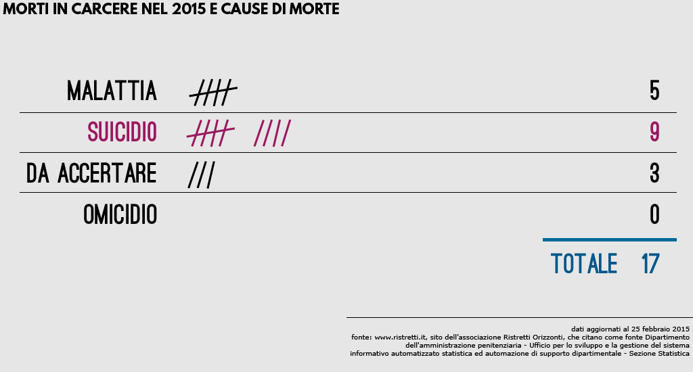
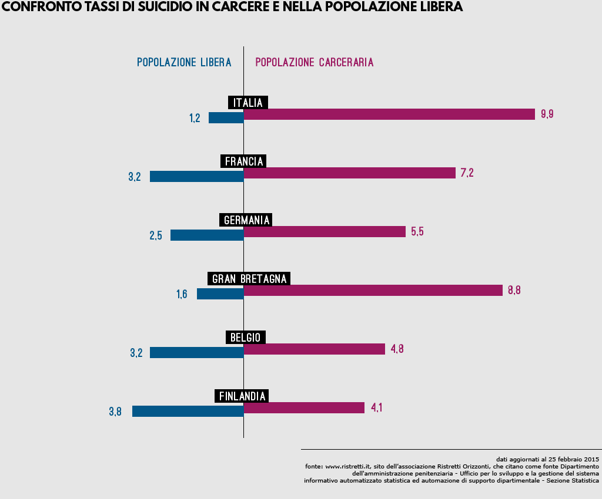
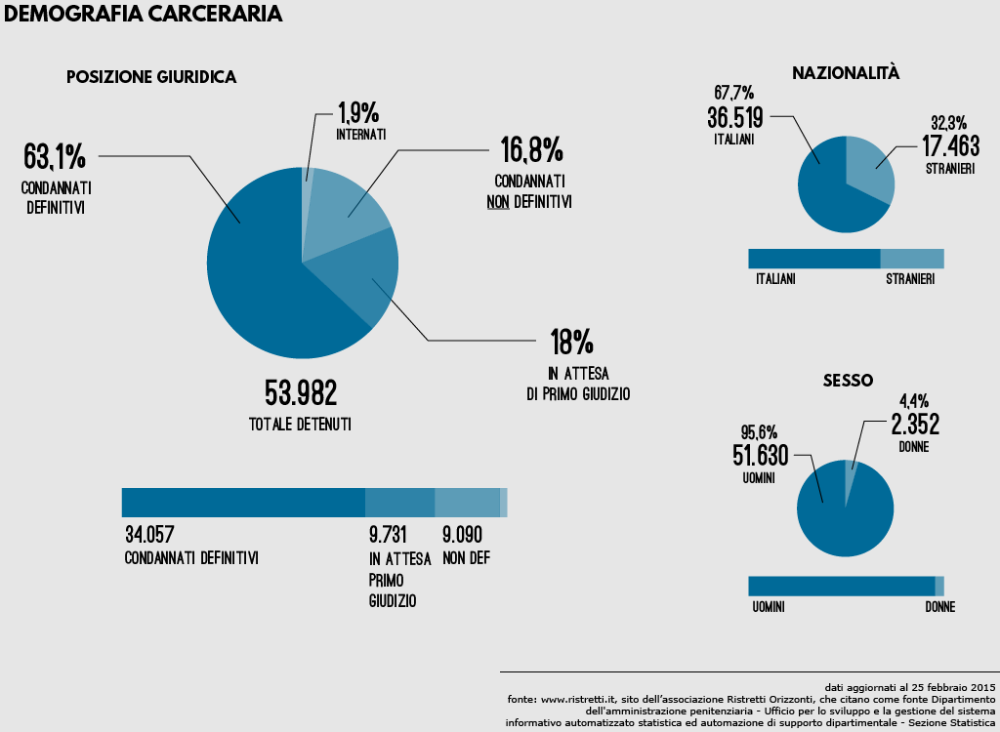
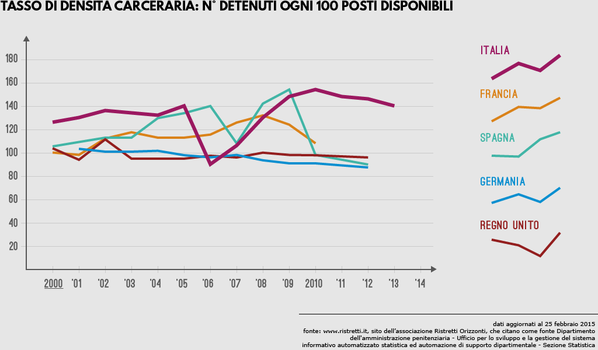
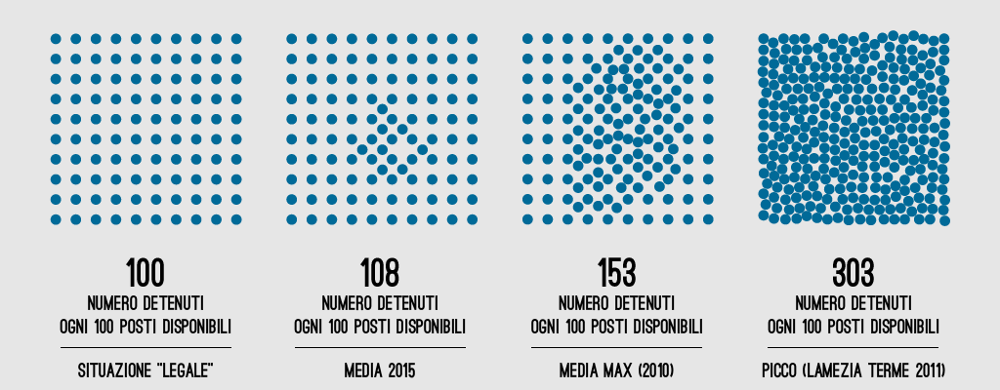
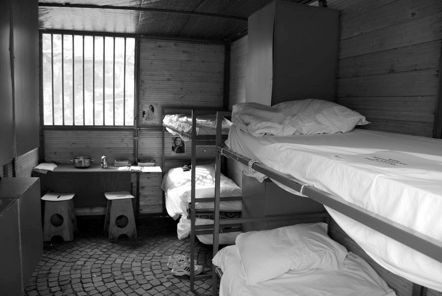
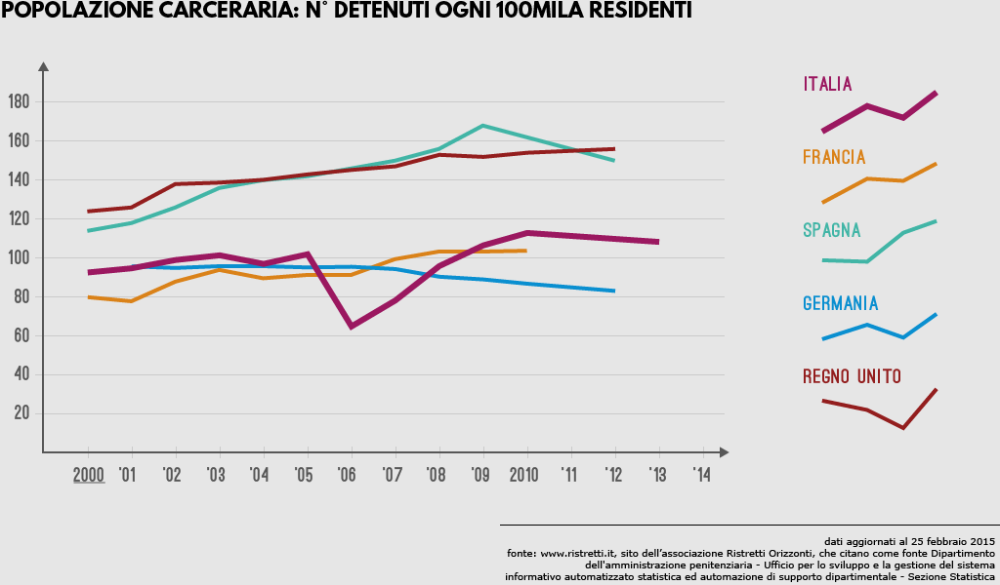
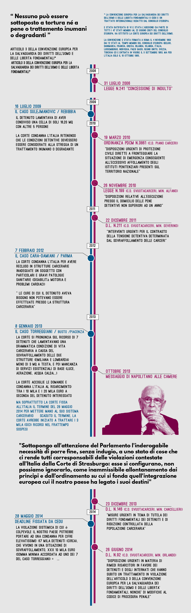

I GIORNI CONTATI
vivere e morire in carcere
vivere e morire in carcere
Al 12 marzo 2015 sono 17 le persone morte nelle carceri italiane dall’inizio dell’anno. Di queste, 9 si sono tolte la vita. Su 3 episodi sono in corso accertamenti da parte dell’autorità giudiziaria. Si registrano 0 casi di omicidio.

Tra coloro che si sono suicidati, in 5 stavano scontando una pena con condanna definitiva, 3 di loro erano stati condannati in primo o secondo grado mentre in 1 caso il detenuto era in attesa di primo giudizio.
nessuno dei detenuti che si sono tolti la vita si trovava in carcere sottoposto a misura di custodia cautelare.
nessuno dei detenuti che si sono tolti la vita si trovava in carcere sottoposto a misura di custodia cautelare.
Il sistema più diffuso per togliersi la vita in carcere è l’impiccamento: nel 2015 sono già 5 le persone che hanno deciso di togliersi la vita in questo modo. Segue l’inalazione di gas, scelto da 3 detenuti, mentre altri 1 sono morti per soffocamento.
A partire dall’anno duemila il numero di suicidi accertati si è sempre mantenuto al di sopra dei 40 casi l’anno, con il record raggiunto nel 2009 di 72 suicidi. Il più alto numero di morti totali, 186, è stato raggiunto invece nel 2011.
In carcere, in Italia, le persone si uccidono a tassi ben superiori alla media nazionale e alla popolazione carceraria di altri paesi europei. Al contrario, fuori dal carcere, l’Italia registra tassi di suicidio ben al di sotto della media europea.

Al 28 Febbraio 2015 le persone in carcere in Italia sono 53.982.
Di queste, 9.731 sono in attesa di primo giudizio, 9.090 sono state condannate in maniera non definitiva e 34.057 condannate con sentenza passata in giudicato.

Di queste, 9.731 sono in attesa di primo giudizio, 9.090 sono state condannate in maniera non definitiva e 34.057 condannate con sentenza passata in giudicato.
Al 28 febbraio 2015 un totale di 53.982 detenuti vivono nello spazio adatto a 49.895, con un indice di sovraffollamento pari a 108. Vuol dire che nello spazio destinato a cento persone ne vivono 8 in più del consentito. Negli anni passati si sono raggiunti picchi ben più alti: nel 2009 l’indice di sovraffollamento medio era pari a 153 con dei massimi registrati, in alcuni centri di detenzione, di oltre 300.


Nei casi peggiori, vuol dire condividere una cella di 9 metri quadri con altri due o tre detenuti, potendo uscire dalla cella 1 ora ogni 24 e potendo stare in piedi solamente a turno. All'interno dello stesso ambiente, oltre ai letti, trovano di solito spazio anche una piccola cucina e i servizi igienici.

L’Italia però non è il paese col più alto tasso di detenzione in rapporto alla popolazione. Paesi con tassi di detenzione storicamente più alti non hanno problemi strutturali di sovraffollamento.

Gli istituti che ospitano i detenuti in Italia sono 201 e distribuiti in tutte e venti le regioni italiane. La regione con più istituti è la Sicilia (23), mentre quella che ospita più detenuti è la Campania (6.079). Negli istituti della Lombardia troviamo invece il numero più alto di detenuti stranieri.
Il problema del sovraffollamento e in generale quello delle condizioni carcerarie in Italia è stato più volte oggetto di attenzione da parte della Corte Europea dei Diritti dell'Uomo (CEDU), che in diverse situazioni ha condannato l'Italia a risarcire alcuni detenuti per le condizioni di detenzione inumane a cui sono stati sottoposti.

Esiste un legame tra sovraffollamento e tasso di suicidi? Un documento di Ristretti del 2010 tenta di provare questa correlazione, notando come nei 9 istituti con più suicidi il tasso medio di sovraffollamento sia superiore alla media nazionale. Allo stesso tempo però nella lista degli istituti con più casi di suicidio ne compaiono alcuni con un tasso inferiore a quello nazionale.
A mettere ulteriormente in dubbio la relazione sovraffollamento suicidi è lo studio delle condizioni carcerarie post-indulto (2006). Gli anni 2006 e 2007 infatti registrano un tasso di sovraffollamento medio inferiore a 100 (ovvero in quel periodo vi erano più posti disponibili che detenuti) e un calo, in termini assoluti, del numero di morti in carcere. L'incidenza dei suicidi sul numero di morti però rimane in linea sia con gli anni precedenti che con quelli successivi.
è indubbio che il provvedimento di indulto abbia contribuito, temporaneamente, ad alleviare le condizioni dei carcerati. Approvato nel 2006 dal governo Prodi, questa misura eccezionale ha fatto sì che la popolazione carceraria diminuisse, nel breve periodo, di circa 20.000 unità, attraverso uno sconto degli ultimi 3 anni di pena. Il meccanismo prevedeva che, in caso di recidiva, il reo dovesse quindi sommare vecchia e nuova pena, annullando lo sconto ottenuto.
Il meccanismo sembra aver funzionato: se è vero che nel periodo immediatamente post-indulto il tasso di reati è aumentato (come anticipo di reati che si sarebbero comunque commessi con uscita a fine pena), è anche vero che il tasso di recidiva tra i premiati dall'indulto è consistentemente più basso di quello di coloro che escono a fine pena.
Un altro indicatore delle condizioni di vita in carcere è costituito dalla percentuale di coloro che svolgono attività lavorativa in carcere, che si attesta intorno al 23%.